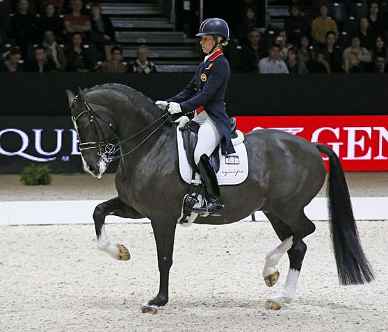
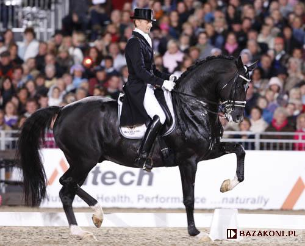

VALEGRO
Valegro to ogier urodzony 5 lipca 2002 roku rasy KWPN. Ma 168 cm w kłębie i pochodzi z Holandii. Z amazonką Charlotte Dujardin został tzrykrotnie mistrzem olimpijskim w ujeżdżeniu. Jest bardzo poprawnie zbudowany, posiada poziomą łopatkę umożliwiającą mu wykonanie większej ilości rzeczy niż przeciętny koń. Oprócz tego dzięki doskonałemu treningowi posiada bardzo płynny i naturalny luźny ruch, nawet podczas elemntów takich jak passage czy piaff. W 2016 zakończył swoją karierę, a w 2020 postanowiono, że będzie miał pomnik w niewielkim miasteczku Newent w hrabstwie Gloucestershire w południowej Anglii. Statua ma 150 cm wysokości i stanie na 70 cm postumencie na rynku. |
 |
TOTILAS
Totilas był ogierem KWPN, urodzonym w Holandii 14 grudnia 2000 roku. Zajeżdżał go i wystawiał na zawodach w jego najlepszym okresie kariery Edward Gal, który pomimo wątppliwych metod zrobił z niego maszynę do wygrywania konkursów ujeżdzeniowych. Totilas wygrał między innymi puchar świata i trzy razy mistrzostwa świata, raz w klasyfikacji drużynowej i dwa w indywidualnej. W 2015 roku odszedł na emeryturę z powodu kontuzji. Jego właściciele zapłacili za niego 10 milionów euro, co w przeliczeniu wynosi 49,9 miliona złoty. 14 grudnia 2020 roku zmarł na kolkę. |
 |